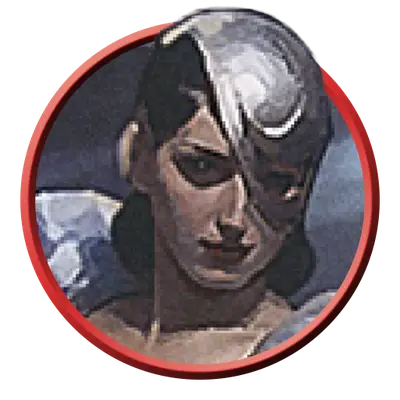

Архимаг-иллюзионист
Illusionist Archmage
Средний или Маленький Гуманоид (Волшебник), Нейтральный

Класс Защиты 16 Инициатива +8 (18)
Хиты 220 (40к8 + 40)
Скорость 30 футов
| мод | спас | ||
|---|---|---|---|
| СИЛ | 10 | +0 | +0 |
| ЛОВ | 16 | +3 | +3 |
| ТЕЛ | 12 | +1 | +6 |
| мод | спас | ||
|---|---|---|---|
| ИНТ | 20 | +5 | +10 |
| МДР | 15 | +2 | +7 |
| ХАР | 16 | +3 | +3 |
Чувства пассивное Восприятие 17
Языки Общий
Опасность 15 (13 000 опыта; БВ +5)
Особенности
Сопротивление магии. Архимаг совершает с Преимуществом спасброски от заклинаний и прочих магических эффектов.
Действия
Мультиатака. Архимаг совершает четыре атаки Волшебным всплеском.
Волшебный всплеск. Бросок рукопашной или дальнобойной атаки: +10, досягаемость 5 фт. или дистанция 150 фт. Попадание: 21 (3к10 + 5) Силового урона.
Сотворение заклинаний. Архимаг сотворяет одно из следующих заклинаний (заклинательная характеристика — Интеллект, Сл спасброска заклинаний 18):
Неограниченно: Волшебная рука, Доспехи мага, КЗ, Малая иллюзия, Маскировка, Невидимость, Обнаружение магии, Фокусы
2/день каждое: Волшебная аура Нистула, Образ, Притворство, Сотворение
1/день каждое: Жуть, Таинственный мираж
Бонусные действия
Морочащие заклинания (2/день). Архимаг сотворяет Гипнотический узор или Отражения (заклинательная характеристика — та же, что для Сотворения заклинаний).
Реакции
Защитная магия (3/день). Архимаг сотворяет Контрзаклинание или Щит в ответ на условие этого заклинания (заклинательная характеристика — та же, что для Сотворения заклинаний).
Бонус мастерства +5
Среда обитания Любая
Сокровища Личные, Магические
Архимаги
Магистры магии
Все архимаги овладевают невероятной волшебной мощью, но некоторые специализируются на определённой школе магии, доводя свои способности в этой области до невероятных высот. Такие архимаги наполняют свои гримуары заклинаниями из предпочитаемой школы и разрабатывают уникальные магические приёмы.
Архимаги-иллюзионисты овладели осязаемостью иллюзорной магии. Они могут создавать сложные эффекты, кажущиеся невероятно реальными, и изменять мельчайшие детали иллюзорных личин, предметов и местности.